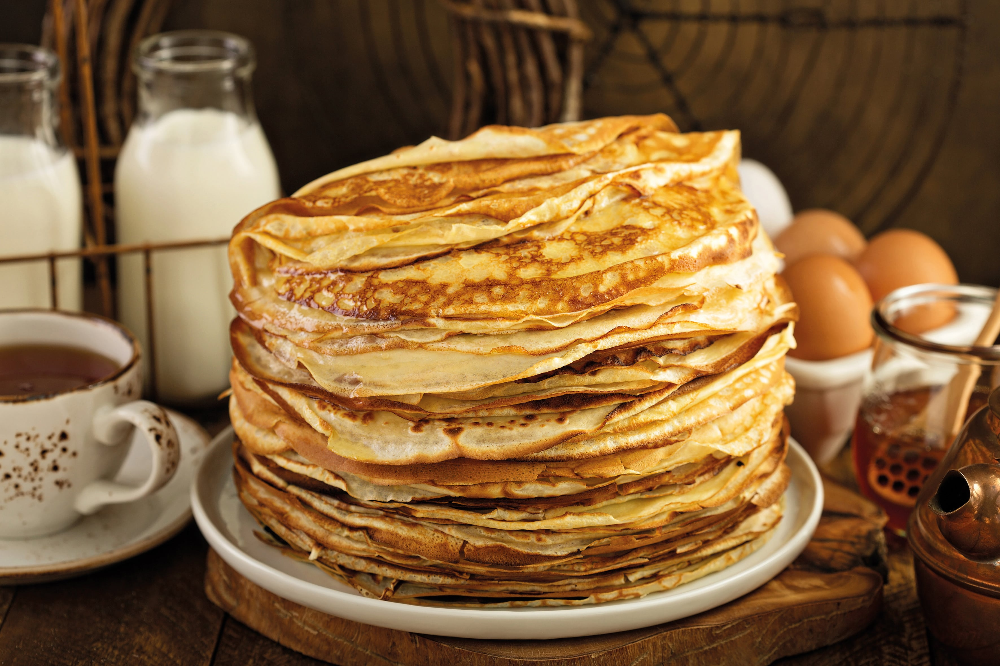
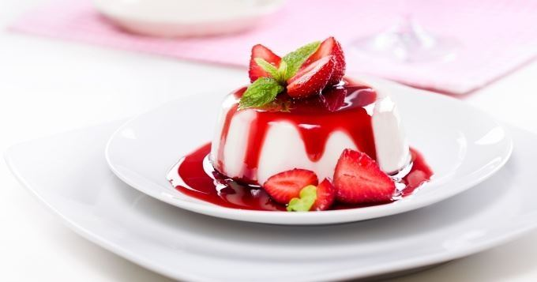
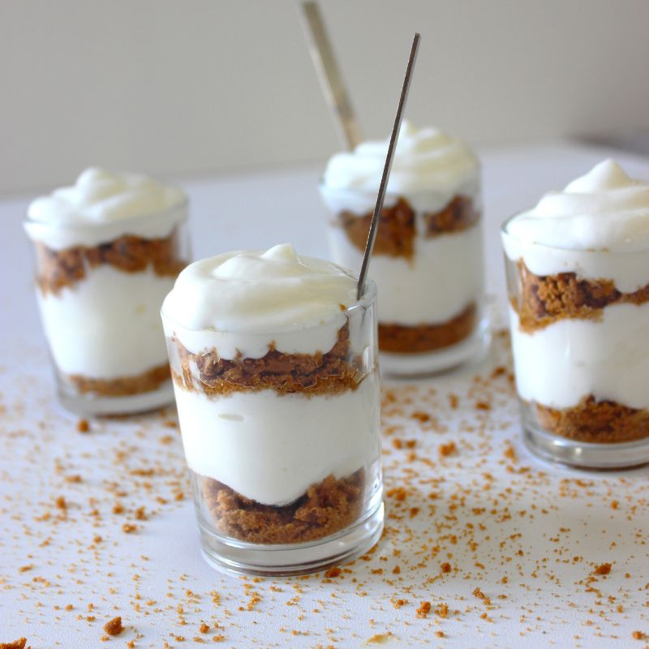

Les recettes de Ksénia

Crêpes moelleuses
- 250 g de farine de blé classique
- 4 oeufs frais
- 450 ml de lait légèrement tiède
- 2 c. à soupe de rhum ambré ou de fleur d'oranger, ou 1/2 verre de bière blonde
- 1 c. à soupe d' extrait de vanille ou 1 sachet de sucre vanillé
- 2 c. à soupe de sucre
- 1 pincée de sel
- 50 g de beurre fondu

Panna cotta à la vanille
- Feuille(s) de gélatine de 2 g
- 2 pièce(s) Crème liquide entière 60 cl
- Gousse(s) de vanille 1 pièce(s)
- Sucre en poudre 90 g
- Pour le coulis Eau 10 cl
- Fraise(s) 300 g
- Sucre en poudre 20 g

Tiramisu au café
- 250g de mascarpone
- 3 œufs
- 50g de sucre
- 1 sachet de sucre vanillé (±8g)
- 1 verre de café
- 1 paquet de biscuits boudoirs
- Cacao en poudre